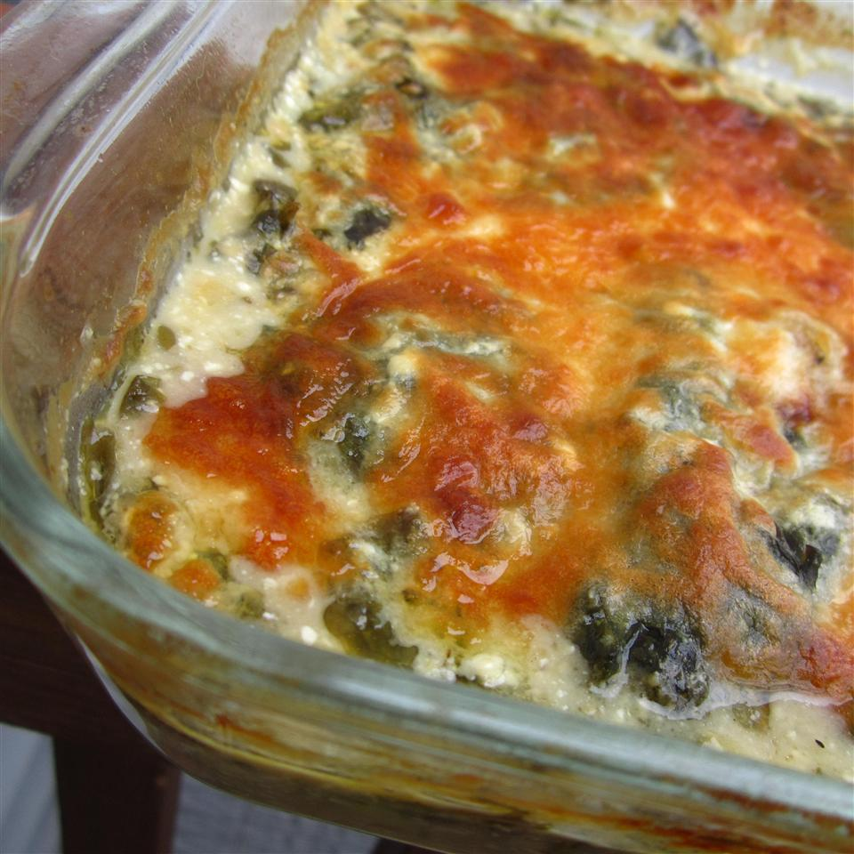

Spinach and Chicken Casserole

My son, who is a extremely picky eater, lives this quick and simple dish.It's great for pot-luck dinners.
Ingridients:
- 2 cups boneless chicken breast
- 1 cup Italian salad dressing, or as needed
- 1/2 teaspoon garlic powder
- 1/4 teaspoon lemon pepper
- 1 (8 ounce) package fresh spinach
- 2 (8 ounce) package cream cheese, softened
- 1/2 cup chopped fresh chives
- 1/4 cup olive oil
- 1 clove garlic, minced
- 1 pinch salt and ground black pepper to taste
- 2 cups chicken broth
- 1 cup shredded mozzarella cheese
Steps: